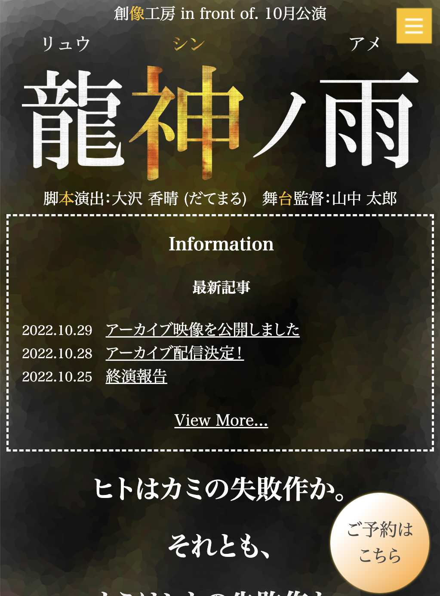
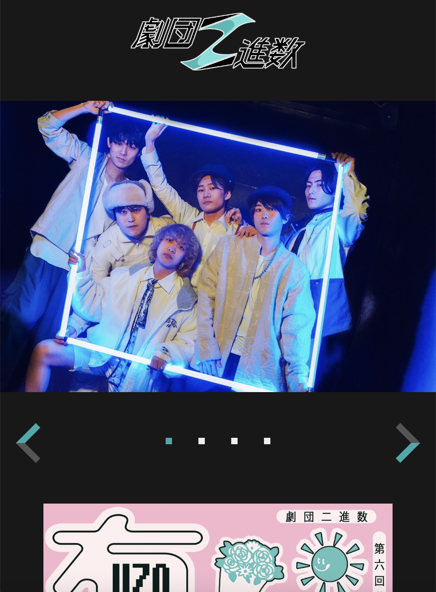
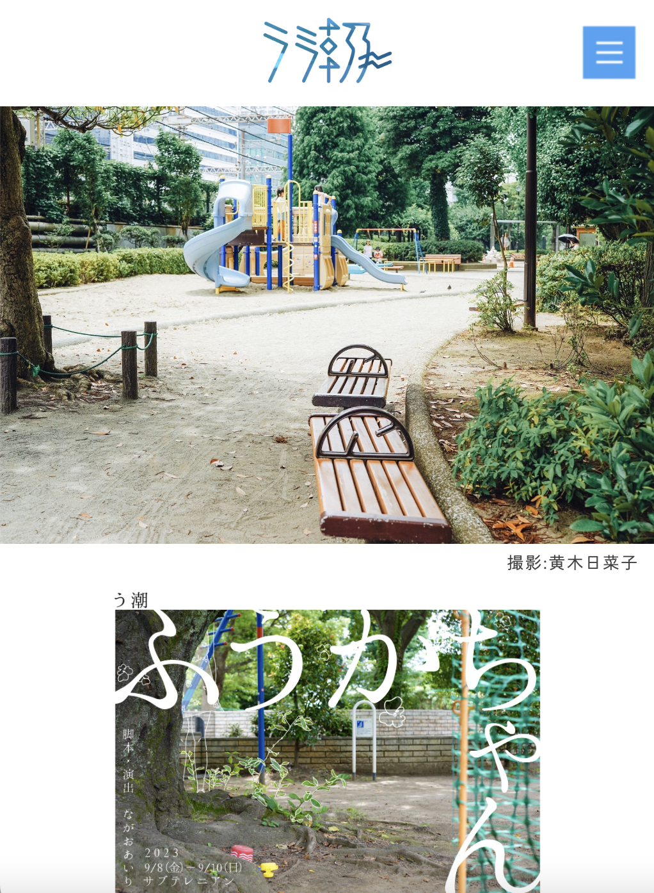
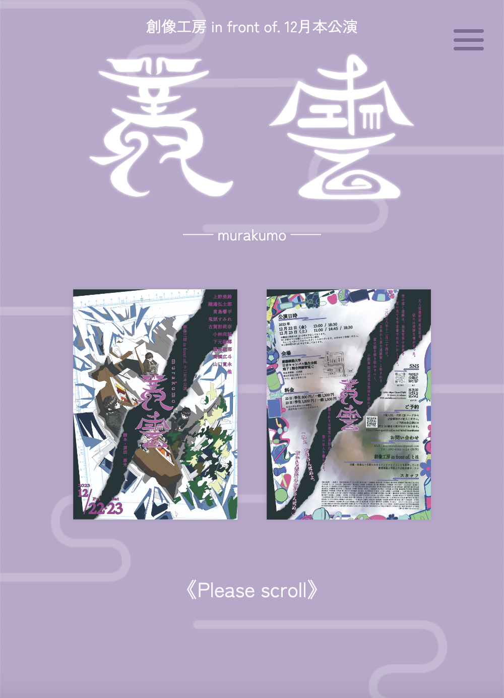

《HTML/CSS》
高校時代に情報科の授業で習得しました。
基本的なコーディング・レスポンシブデザインが可能です。
《JavaScript》
独学で少しずつ習得している段階です。
当サイト上部の太陽/月の切り替えのような、簡単なものであれば実装が可能です。
《illustrator》
研究発表のポスター作成などで日常的に使用しています。
当サイト上部のネオン風アイコンはillustratorで作成しました。
《Photoshop》
Web製作における背景柄の作成や画像の切り抜きに使用しています。
自ら撮影した写真を扱うことが少ないため、画像加工などの機能はあまり利用経験がありません。
《Python》
大学の授業にて基礎を習得しました。
2年次には授業アシスタントを務めていました。
《Touch Designer》
所属する研究会でのデジタルアート制作に使用しています。
《p5.js, Ruby》
大学の授業にて基礎を習得しました。
演劇サークルの公演やアマチュア劇団の公式サイトの製作・運営に携わっています。
|

創像工房 in front of.
|

劇団二進数
|
|

う潮（劇団）
|

創像工房 in front of.
|
大学では触覚・質感を扱うゼミに所属しています。
春学期には、照明効果が舞台に与える実体質感をテーマに、
照明シミュレーター"Capture"を用いた考察を行いました。
当て方によって舞台面の立体感、役者の存在感が異なって見える
秋学期はSFC主催の研究発表イベント(ORF)に向けて、
多方面からの助言を頂きながら研究課題に取り組んでいます。
慶應義塾大学公認演劇サークル「創像工房 in front of.」に所属し、学生代表を務めています。
創像工房 in front of.は慶應義塾大学最大の演劇サークルで、2023年10月時点で181名が在籍しています。
サークルでは主に舞台監督、役者、演出を担っています。
劇独特の統一された世界観の表現を、
スタッフセクションで一丸となって妥協せず模索し続けました。
また、「チームの雰囲気は舞台監督が作るもの」と言われることもあるため、
常に自分が笑顔で臨むことを心がけました。
小学生〜27歳の成長を一続きで演じました。
細かな心情の流れやその役の生き方の表現の試行錯誤を繰り返しました。
「演劇は生モノ」という通り、この公演は舞台上で初めて生じた感情が多く、
表現の楽しさを実感した経験でした。
ここで感じた楽しさが、大学演劇を続けている原動力になっています。
演出場が多い劇だったので、必然的に曲数の多い音響になりました。
こちらも独特の世界観が重要視される劇であったため、
何度も会議を重ねて脚本演出家の表現したいものを汲み取りながら、
どのように音に昇華させていくかを考えました。